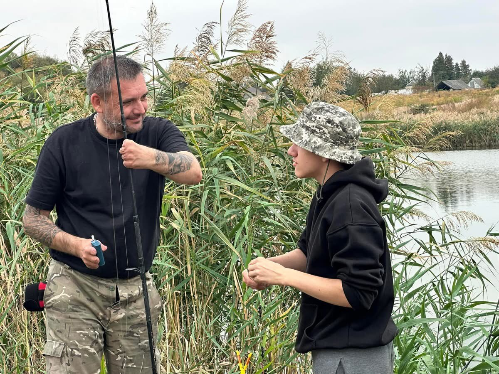
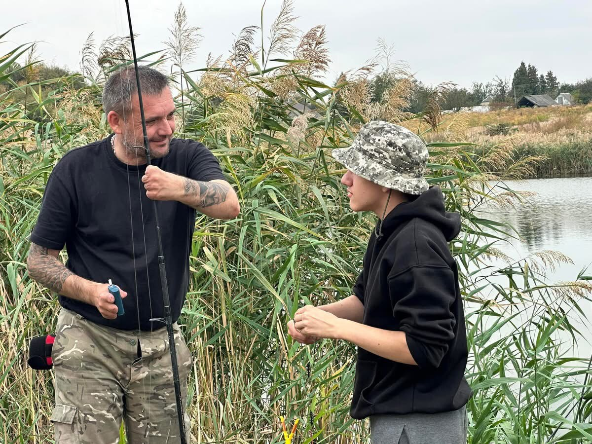

Про нас
Організація «Ветеранський простір реінтеграції «Побратими Честі» створена для підтримки воїнів, які повертаються до мирного життя після військової служби, а також для їхніх родин. Основною метою нашої діяльності є створення повноцінного ветеранського простору, який відповідає методичним рекомендаціям і потребам наших ветеранів. Цей простір має стати безпечним і комфортним середовищем для реінтеграції, де надаватимуться соціальні, медичні, психологічні та юридичні послуги.
Ми прагнемо створити таку спільноту, в якій кожен ветеран знайде підтримку, отримає доступ до ресурсів для розвитку і можливості відновити зв’язок із суспільством. У співпраці з державними і недержавними організаціями ми розробляємо й реалізуємо програми, орієнтовані на комплексну підтримку: від психологічної реабілітації до професійного навчання та соціальної адаптації.
Наша місія – це соціальна відповідальність і стале забезпечення ресурсами для ветеранів, щоб кожен з них міг знову знайти себе і свої можливості в цивільному житті. Ми віримо, що тільки через єдність, повагу і співпрацю можемо створити майбутнє, де цінуються і захищаються права та гідність тих, хто боровся за нашу свободу.
Цінності
Повага та Гідність
Ми надаємо всебічну підтримку ветеранам, людям з інвалідністю та їхнім родинам, захищаючи їхні права та свободи, сприяючи їхній реінтеграції в нові соціальні умови. Повага до гідності й досвіду кожного ветерана є нашим основоположним принципом.
Комплексний Підхід і Інновації
Ми дотримуємося індивідуалізованого підходу до кожного ветерана, пропонуючи широкий спектр соціальної, психологічної, медичної та юридичної допомоги. Гнучкість та інновації є ключовими аспектами, включаючи телемедичні консультації для підтримки у віддалених районах.
Єдність і Підтримка
Проєкти, як-от «peer-to-peer» юридична допомога та різноманітні майстер-класи, підкреслюють важливість взаємної підтримки серед ветеранів, що сприяє довірі та колективній стійкості в критичних життєвих ситуаціях.
Прозорість і Підзвітність
Ми забезпечуємо прозорість усіх процесів і фінансових питань, адже це є основою довіри громади та партнерів до нашої організації. Підзвітність і відкритість – це наші незмінні цінності.
Партнерство і Співпраця
«Побратими Честі» активно співпрацюють з державними та недержавними установами, організаціями та фондами для розширення ресурсів і можливостей підтримки ветеранів та їхніх сімей, що дає змогу розвивати нові проєкти.
Соціальна Відповідальність і Сталість
Наші проєкти орієнтовані на сталий розвиток із довготривалим соціальним впливом. Ми прагнемо створити систему підтримки, яка допомагає підвищувати якість життя ветеранів і зміцнювати громади, в яких вони живуть.
Ці цінності є основою нашої діяльності та формують основу для всіх партнерських проєктів, підкреслюючи нашу відповідальність перед суспільством і прагнення підтримати ветеранів у їхньому новому житті.
Новини
Наші проєкти
У 2024 році ми підписали меморандум про співпрацю з Державним університетом інфраструктури і технологій. Це партнерство стало основою для запуску навчально-реабілітаційної програми, яка допомагає ветеранам здобути нові знання та адаптуватися до цивільного життя. Перший учасник програми вже почав навчання та здійснив свою давню мрію. Спільні проєкти з університетом відкривають нові шляхи підтримки, зокрема індивідуальні освітні маршрути та професійну переорієнтацію. Ми продовжуємо цю ініціативу, аби кожен ветеран мав шанс на новий старт.


Риболовля стала першим етапом нової реабілітаційної ініціативи для ветеранів, яку ми реалізуємо в межах програми емоційного відновлення. Перебування на природі, спілкування з побратимами та спокійний формат занять допомогли учасникам відчути внутрішню рівновагу та знизити рівень напруги. Особливо важливим стало перше знайомство з психологинею, яка створила атмосферу довіри та підтримки. Такий формат давно успішно застосовується у світовій практиці реабілітації ветеранів, зокрема в США та Великій Британії. Ми віримо, що адаптація до мирного життя можлива завдяки простим, але глибоким методам відновлення. Це лише початок програми, яка з часом охопить ще більше учасників.
 

Ми взяли участь у потужному мистецькому заході, організованому фастівськими закладами культури та ГО «Ріка Сонця», з метою підтримки ЗСУ. Завдяки спільним зусиллям вдалося зібрати 29 500 грн для придбання зарядної станції для медичної роти 54 бригади. Це приклад єдності громади, де творчість стала інструментом реальної допомоги захисникам. До проєкту долучилися дитячі колективи, музеї, школи народного мистецтва та культурні осередки міста. Ми щиро вдячні всім учасникам і організаторам, зокрема Товариству жінок м. Фастова, за ініціативність і щирість. Такі події доводять: мистецтво здатне змінювати реальність — коли стоїть на боці добра.


18 серпня 2024 року ми провели першу сесію з остеопатії для ветеранів та діючих військових у процесі реабілітації. Захід відбувся за участі реабілітолога Сергія Лисиці та професорки Ганни Жари й поєднав практичні навички з теоретичною підтримкою. Учасники отримали інструменти для самостійної роботи зі своїм тілом та ментальним станом. Це важливий крок у формуванні цілісного підходу до відновлення після служби. Наша мета — створити безпечне середовище, де кожен ветеран може відчути підтримку й отримати знання, корисні в повсякденному житті. Плануємо зробити подібні сесії регулярними, щоб розширити доступ до якісної допомоги.